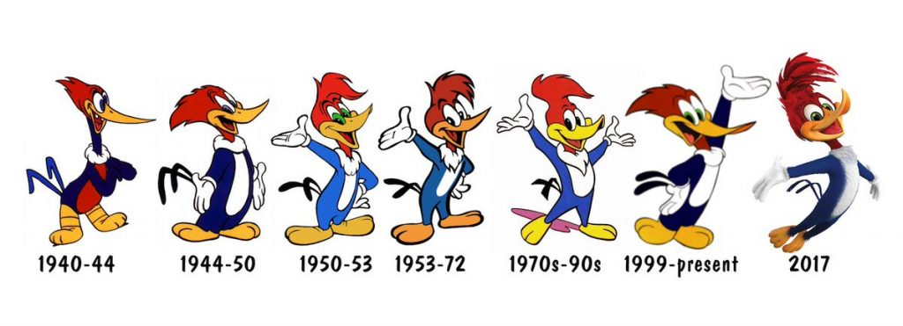

Um dos desenhos mais famosos no Brasil e no mundo!
Lá em 1940, Walter Lantz, desenhista na Universal, estava ávido em criar um personagem que pudesse ser popular e o projetasse ainda mais longe - Ele anteriormente já havia criado o personagem Oswald.
O Pica-Pau, inicialmente, não era um protagonista. Na verdade,ele estreou como um antagonista! Sua estreia foi no desenho Andy Panda, no episódio Knock, Knock.
No entanto, ele fez tanto sucesso que rapidamente surgiram ideias de migrá-lo para um desenho próprio. E assim, em 1941, no episódio Pantry Panic (Em português: Pânico na cozinha), o Pica-Pau estrava a sua série.
Vários personagens foram introduzidos no desenhos ao longo dos anos. Aqui vão alguns dos mais recorrentes:
Aqui vão algumas curiosidades sobre o desenhos Pica-Pau
A icônica risada do Pica-Pau, depois de Blanc, também evoluiu e ganhou diferentes ritmos e entonações
Além de dublar, Blanc também cantava, como mostra este trecho de "Ski para Dois", episódio do Pica-Pau da era clássica.
Já na era considerada "Moderna" do Pica-Pau, um ar mais "cartunesco" e infantil foi adicionado ao desenho.
Um pouco diferente se comparado às aberturas clássicas, como está de 1950.
Para saber mais, visite o Fandon do Pica-Pau (Em inglês) Acesse aqui o site